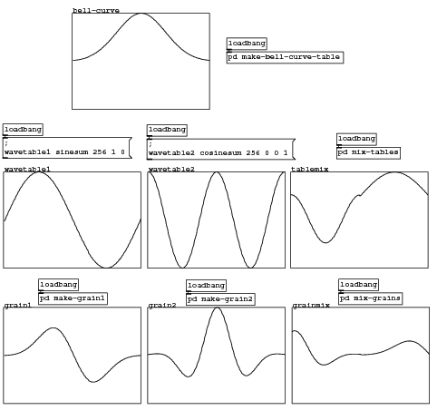
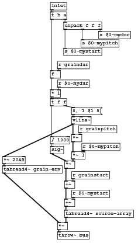
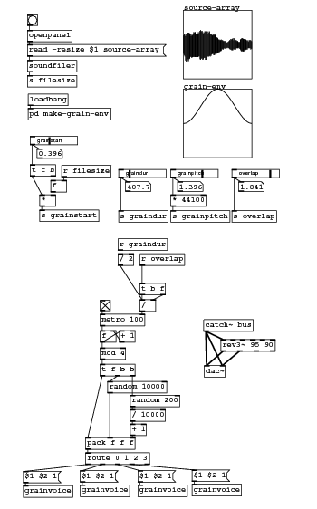
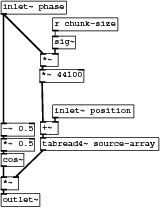
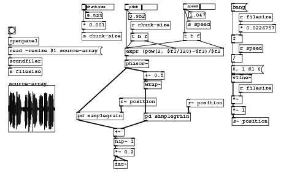

Code examples for “Designing Sound” textbook
Chapter 21: Technique 5 - Grain Techniques
Granular demonstration

#N canvas 11 77 633 607 10; #N canvas 0 0 722 532 xgrapher 0; #X obj 124 41 f; #X obj 151 40 + 1; #X msg 121 -3 0; #X msg 156 -3 1; #X obj 147 372 textfile; #X obj 147 305 list prepend add; #X obj 147 327 list trim; #X msg 158 350 clear; #X obj 181 94 t b b b; #X obj 430 -75 inlet options; #X obj 156 -23 t b b b; #X obj 290 167 t b b; #X obj -16 -76 inlet control; #X obj -15 -50 route start done set; #X msg 41 133 "set \$1"; #X obj 236 -82 inlet table; #X obj 165 142 tabread; #X msg 227 -4 set \$1; #X obj 255 36 print; #X obj 124 19 metro 1; #X obj 148 186 pack f f; #X obj 119 94 t b f f; #X msg 267 304 write /tmp/textfile.txt cr; #X obj 153 68 sel 256; #X connect 0 0 1 0; #X connect 0 0 21 0; #X connect 0 0 23 0; #X connect 1 0 0 1; #X connect 2 0 0 1; #X connect 2 0 19 0; #X connect 3 0 19 0; #X connect 5 0 6 0; #X connect 6 0 4 0; #X connect 7 0 4 0; #X connect 8 1 11 0; #X connect 8 2 2 0; #X connect 9 0 5 0; #X connect 10 0 3 0; #X connect 11 0 7 0; #X connect 11 1 22 0; #X connect 12 0 13 0; #X connect 13 0 10 0; #X connect 13 1 11 0; #X connect 13 2 14 0; #X connect 14 0 5 0; #X connect 15 0 17 0; #X connect 16 0 20 1; #X connect 17 0 18 0; #X connect 17 0 16 0; #X connect 19 0 0 0; #X connect 20 0 5 0; #X connect 21 1 20 0; #X connect 21 2 16 0; #X connect 22 0 4 0; #X connect 23 0 8 0; #X restore 767 844 pd xgrapher; #X msg 767 729 start; #X obj 803 797 symbol; #X obj 803 820 makefilename %s; #X obj 803 754 loadbang; #X text 868 754 select table; #N canvas 0 0 450 300 graph4 0; #X array bell-curve 256 float 1; #A 0 0.0183156 0.0194921 0.0207341 0.0220444 0.0234261 0.0248822 0.0264159 0.0280305 0.0297292 0.0315155 0.0333928 0.0353647 0.0374347 0.0396066 0.041884 0.0442707 0.0467706 0.0493876 0.0521255 0.0549883 0.0579801 0.0611047 0.0643664 0.067769 0.0713167 0.0750134 0.0788633 0.0828703 0.0870384 0.0913714 0.0958734 0.100548 0.105399 0.11043 0.115645 0.121047 0.12664 0.132426 0.138409 0.144592 0.150977 0.157568 0.164365 0.171372 0.178591 0.186023 0.19367 0.201532 0.209611 0.217908 0.226423 0.235155 0.244105 0.253272 0.262655 0.272252 0.282063 0.292084 0.302314 0.312749 0.323387 0.334223 0.345253 0.356474 0.367879 0.379465 0.391223 0.40315 0.415237 0.427478 0.439864 0.452389 0.465043 0.477818 0.490704 0.503692 0.516771 0.52993 0.54316 0.556448 0.569783 0.583152 0.596544 0.609946 0.623344 0.636726 0.650077 0.663385 0.676634 0.689811 0.702901 0.71589 0.728763 0.741506 0.754103 0.766539 0.778801 0.790872 0.802738 0.814385 0.825797 0.83696 0.847861 0.858483 0.868815 0.878842 0.88855 0.897927 0.906961 0.915637 0.923946 0.931875 0.939413 0.94655 0.953275 0.95958 0.965455 0.970891 0.975882 0.980419 0.984496 0.988108 0.991249 0.993915 0.996101 0.997805 0.999024 0.999756 1 0.999756 0.999024 0.997805 0.996101 0.993915 0.991249 0.988108 0.984496 0.980419 0.975882 0.970891 0.965455 0.95958 0.953275 0.94655 0.939413 0.931875 0.923946 0.915637 0.906961 0.897927 0.88855 0.878842 0.868815 0.858483 0.847861 0.83696 0.825797 0.814385 0.802738 0.790872 0.778801 0.766539 0.754103 0.741506 0.728763 0.71589 0.702901 0.689811 0.676634 0.663385 0.650077 0.636726 0.623344 0.609946 0.596544 0.583152 0.569783 0.556448 0.54316 0.52993 0.516771 0.503692 0.490704 0.477818 0.465043 0.452389 0.439864 0.427478 0.415237 0.40315 0.391223 0.379465 0.367879 0.356474 0.345253 0.334223 0.323387 0.312749 0.302314 0.292084 0.282063 0.272252 0.262655 0.253272 0.244105 0.235155 0.226423 0.217908 0.209611 0.201532 0.19367 0.186023 0.178591 0.171372 0.164365 0.157568 0.150977 0.144592 0.138409 0.132426 0.12664 0.121047 0.115645 0.11043 0.105399 0.100548 0.0958734 0.0913714 0.0870384 0.0828703 0.0788633 0.0750134 0.0713167 0.067769 0.0643664 0.0611047 0.0579801 0.0549883 0.0521255 0.0493876 0.0467706 0.0442707 0.041884 0.0396066 0.0374347 0.0353647 0.0333928 0.0315155 0.0297292 0.0280305 0.0264159 0.0248822 0.0234261 0.0220444 0.0207341 0.0183156; #X coords 0 1 255 -1 200 140 1; #X restore -23 22 graph; #X obj 321 741 loadbang; #X obj 321 792 soundfiler; #N canvas 0 0 450 300 graph4 0; #X array wavetable1 259 float 1; #A 0 -0.0245412 0 0.0245412 0.0490676 0.0735645 0.0980171 0.122411 0.14673 0.170962 0.19509 0.219101 0.24298 0.266713 0.290284 0.313681 0.33689 0.359895 0.382683 0.405241 0.427555 0.449611 0.471396 0.492898 0.514102 0.534997 0.55557 0.575808 0.595699 0.615231 0.634393 0.653172 0.671558 0.68954 0.707106 0.724247 0.740951 0.757208 0.77301 0.788346 0.803207 0.817584 0.831469 0.844853 0.857728 0.870087 0.881921 0.893224 0.903989 0.914209 0.923879 0.932992 0.941544 0.949528 0.95694 0.963776 0.970031 0.975702 0.980785 0.985277 0.989176 0.992479 0.995185 0.99729 0.998795 0.999699 1 0.999699 0.998796 0.997291 0.995185 0.99248 0.989177 0.985278 0.980786 0.975702 0.970032 0.963776 0.956941 0.949529 0.941545 0.932993 0.92388 0.91421 0.90399 0.893225 0.881922 0.870088 0.85773 0.844855 0.831471 0.817586 0.803209 0.788348 0.773012 0.75721 0.740952 0.724248 0.707108 0.689542 0.67156 0.653174 0.634395 0.615233 0.595701 0.57581 0.555572 0.534999 0.514105 0.4929 0.471399 0.449613 0.427557 0.405243 0.382686 0.359897 0.336892 0.313684 0.290287 0.266715 0.242983 0.219104 0.195093 0.170964 0.146733 0.122413 0.0980197 0.0735671 0.0490703 0.0245439 2.65359e-06 -0.0245386 -0.049065 -0.0735619 -0.0980144 -0.122408 -0.146728 -0.170959 -0.195088 -0.219098 -0.242977 -0.26671 -0.290282 -0.313679 -0.336887 -0.359892 -0.382681 -0.405239 -0.427552 -0.449609 -0.471394 -0.492896 -0.5141 -0.534995 -0.555568 -0.575806 -0.595697 -0.615229 -0.634391 -0.65317 -0.671557 -0.689538 -0.707104 -0.724245 -0.740949 -0.757207 -0.773008 -0.788344 -0.803205 -0.817583 -0.831468 -0.844852 -0.857727 -0.870085 -0.88192 -0.893223 -0.903988 -0.914208 -0.923878 -0.932992 -0.941543 -0.949527 -0.956939 -0.963775 -0.97003 -0.975701 -0.980785 -0.985277 -0.989176 -0.992479 -0.995184 -0.99729 -0.998795 -0.999699 -1 -0.999699 -0.998796 -0.997291 -0.995185 -0.99248 -0.989177 -0.985278 -0.980786 -0.975703 -0.970032 -0.963777 -0.956942 -0.94953 -0.941545 -0.932994 -0.923881 -0.914212 -0.903991 -0.893226 -0.881923 -0.870089 -0.857731 -0.844856 -0.831472 -0.817587 -0.80321 -0.788349 -0.773013 -0.757212 -0.740954 -0.72425 -0.70711 -0.689544 -0.671562 -0.653176 -0.634397 -0.615235 -0.595703 -0.575812 -0.555574 -0.535002 -0.514107 -0.492902 -0.471401 -0.449616 -0.42756 -0.405246 -0.382688 -0.3599 -0.336895 -0.313687 -0.29029 -0.266718 -0.242985 -0.219106 -0.195095 -0.170967 -0.146736 -0.122416 -0.0980223 -0.0735698 -0.0490729 -0.0245465 -5.30718e-06 0.0245359; #X coords 0 1 258 -1 200 140 1; #X restore -123 253 graph; #N canvas 94 264 159 192 make-bell-curve-table 0; #X obj 4 24 t b b; #X obj 4 88 f; #X obj 32 88 + 1; #X msg 34 45 0; #X obj 4 67 until; #X obj 4 109 t f f; #X obj 4 171 tabwrite bell-curve; #X obj 4 150 expr exp(-$f1*$f1); #X obj 4 130 expr ($f1-128)/64; #X obj 4 2 inlet; #X msg 4 45 256; #X connect 0 0 10 0; #X connect 0 1 3 0; #X connect 1 0 2 0; #X connect 1 0 5 0; #X connect 2 0 1 1; #X connect 3 0 1 1; #X connect 4 0 1 0; #X connect 5 0 8 0; #X connect 5 1 6 1; #X connect 7 0 6 0; #X connect 8 0 7 0; #X connect 9 0 0 0; #X connect 10 0 4 0; #X restore 202 78 pd make-bell-curve-table; #X msg 803 775 wavetable1; #N canvas 0 0 450 300 graph4 0; #X array wavetable2 259 float 1; #A 0 0.998795 1 0.998795 0.995185 0.989177 0.980785 0.970031 0.95694 0.941544 0.92388 0.903989 0.881921 0.857729 0.83147 0.803208 0.773011 0.740952 0.707107 0.671559 0.634394 0.5957 0.555571 0.514103 0.471398 0.427556 0.382684 0.336891 0.290286 0.242981 0.195091 0.146732 0.0980184 0.049069 1.32679e-06 -0.0490663 -0.0980157 -0.146729 -0.195089 -0.242979 -0.290283 -0.336888 -0.382682 -0.427554 -0.471395 -0.514101 -0.555569 -0.595698 -0.634392 -0.671557 -0.707105 -0.74095 -0.773009 -0.803206 -0.831468 -0.857727 -0.88192 -0.903988 -0.923879 -0.941543 -0.95694 -0.970031 -0.980785 -0.989176 -0.995184 -0.998795 -1 -0.998796 -0.995185 -0.989177 -0.980786 -0.970032 -0.956941 -0.941545 -0.923881 -0.903991 -0.881923 -0.85773 -0.831471 -0.803209 -0.773013 -0.740953 -0.707109 -0.671561 -0.634396 -0.595702 -0.555573 -0.514106 -0.4714 -0.427558 -0.382687 -0.336893 -0.290288 -0.242984 -0.195094 -0.146734 -0.098021 -0.0490716 -3.98038e-06 0.0490637 0.0980131 0.146726 0.195086 0.242976 0.290281 0.336886 0.382679 0.427551 0.471393 0.514099 0.555566 0.595696 0.63439 0.671556 0.707103 0.740948 0.773007 0.803205 0.831467 0.857726 0.881919 0.903987 0.923878 0.941542 0.956939 0.97003 0.980784 0.989176 0.995184 0.998795 1 0.998796 0.995185 0.989177 0.980786 0.970033 0.956942 0.941546 0.923882 0.903992 0.881924 0.857732 0.831473 0.803211 0.773014 0.740955 0.707111 0.671563 0.634398 0.595704 0.555575 0.514108 0.471402 0.427561 0.382689 0.336896 0.290291 0.242986 0.195097 0.146737 0.0980237 0.0490743 6.63397e-06 -0.049061 -0.0980105 -0.146724 -0.195084 -0.242974 -0.290278 -0.336883 -0.382677 -0.427549 -0.471391 -0.514097 -0.555564 -0.595694 -0.634388 -0.671554 -0.707102 -0.740946 -0.773006 -0.803203 -0.831465 -0.857725 -0.881918 -0.903986 -0.923877 -0.941541 -0.956938 -0.970029 -0.980784 -0.989175 -0.995184 -0.998795 -1 -0.998796 -0.995185 -0.989178 -0.980787 -0.970033 -0.956943 -0.941547 -0.923883 -0.903993 -0.881925 -0.857733 -0.831474 -0.803213 -0.773016 -0.740957 -0.707113 -0.671565 -0.6344 -0.595706 -0.555578 -0.51411 -0.471405 -0.427563 -0.382692 -0.336898 -0.290293 -0.242989 -0.195099 -0.14674 -0.0980263 -0.0490769 -9.28756e-06 0.0490584 0.0980078 0.146721 0.195081 0.242971 0.290276 0.336881 0.382675 0.427546 0.471388 0.514094 0.555562 0.595691 0.634386 0.671552 0.7071 0.740944 0.773004 0.803202 0.831464 0.857723 0.881916 0.903985 0.923876 0.941541 0.956937 0.970029 0.980783 0.989175 0.995184 0.998795 1 0.998796; #X coords 0 1 258 -1 200 140 1; #X restore 87 253 graph; #X msg 321 760 read ./sounds/wave1.wav wavetable1 \, read ./sounds/wave2.wav wavetable2; #N canvas 0 0 450 300 graph4 0; #X array grain1 256 float 1; #A 0 -0.000449488 0 0.000508839 0.00108167 0.00172333 0.00243888 0.00323359 0.00411292 0.00508256 0.00614837 0.0073164 0.00859291 0.00998431 0.0114972 0.0131382 0.0149143 0.0168325 0.0188998 0.0211234 0.0235105 0.0260685 0.0288045 0.031726 0.0348402 0.0381542 0.0416752 0.0454101 0.0493657 0.0535487 0.0579654 0.0626219 0.0675239 0.072677 0.0780861 0.0837558 0.0896902 0.0958929 0.102367 0.109115 0.116137 0.123437 0.131013 0.138865 0.146991 0.15539 0.164058 0.17299 0.182183 0.191629 0.201321 0.211251 0.221409 0.231785 0.242366 0.25314 0.264093 0.275209 0.286472 0.297863 0.309364 0.320955 0.332613 0.344318 0.356045 0.367769 0.379465 0.391106 0.402664 0.414112 0.425419 0.436556 0.447493 0.458197 0.468637 0.478781 0.488597 0.498051 0.507112 0.515746 0.523921 0.531604 0.538763 0.545367 0.551385 0.556787 0.561543 0.565624 0.569005 0.571657 0.573557 0.574682 0.575009 0.574519 0.573193 0.571014 0.567969 0.564045 0.559232 0.553522 0.546909 0.539389 0.530963 0.521632 0.511399 0.500272 0.48826 0.475374 0.461629 0.447041 0.43163 0.415419 0.39843 0.380691 0.362231 0.343081 0.323275 0.302848 0.281837 0.260282 0.238225 0.215707 0.192773 0.169468 0.14584 0.121936 0.0978046 0.0734953 0.0490583 0.0245439 2.65294e-06 -0.0245146 -0.0489573 -0.0732751 -0.097418 -0.121337 -0.144983 -0.168309 -0.191268 -0.213814 -0.235905 -0.257496 -0.278549 -0.299022 -0.31888 -0.338087 -0.356611 -0.374419 -0.391483 -0.407777 -0.423278 -0.437962 -0.451813 -0.464812 -0.476946 -0.488203 -0.498575 -0.508054 -0.516638 -0.524325 -0.531115 -0.537013 -0.542023 -0.546155 -0.549418 -0.551824 -0.553389 -0.554128 -0.55406 -0.553204 -0.551583 -0.549219 -0.546137 -0.542363 -0.537923 -0.532847 -0.527163 -0.5209 -0.51409 -0.506764 -0.498952 -0.490688 -0.482002 -0.472928 -0.463498 -0.453743 -0.443696 -0.433388 -0.42285 -0.412114 -0.401208 -0.390163 -0.379007 -0.367769 -0.356474 -0.345149 -0.33382 -0.322511 -0.311243 -0.300041 -0.288923 -0.277911 -0.267021 -0.256273 -0.245682 -0.235263 -0.22503 -0.214995 -0.20517 -0.195566 -0.186192 -0.177055 -0.168163 -0.159522 -0.151137 -0.143012 -0.135151 -0.127554 -0.120224 -0.113162 -0.106366 -0.0998366 -0.0935713 -0.0875681 -0.0818239 -0.0763354 -0.0710986 -0.0661089 -0.0613616 -0.0568514 -0.0525727 -0.0485195 -0.0446857 -0.041065 -0.0376507 -0.0344361 -0.0314144 -0.0285785 -0.0259215 -0.0234364 -0.0211161 -0.0189536 -0.0169419 -0.015074 -0.0133432 -0.0117428 -0.010266 -0.00890646 -0.0076578 -0.00651386 -0.00546862 -0.00451625 -0.0036511 -0.00286772 -0.00216084 -0.0015254 -0.000898802; #X coords 0 1 255 -1 200 140 1; #X restore -123 450 graph; #N canvas 0 0 450 300 graph4 0; #X array grain2 256 float 1; #A 0 0.0182936 0.0194921 0.0207091 0.0219382 0.0231725 0.0244041 0.0256243 0.0268235 0.0279914 0.0291165 0.0301868 0.0311889 0.0321089 0.0329317 0.0336416 0.0342217 0.0346548 0.0349223 0.0350054 0.0348842 0.0345387 0.033948 0.033091 0.0319461 0.0304919 0.0287065 0.0265683 0.0240561 0.0211487 0.0178258 0.0140677 0.00985556 0.00517183 1.46519e-07 -0.00567429 -0.0118646 -0.0185818 -0.0258349 -0.0336305 -0.0419727 -0.0508625 -0.0602983 -0.070275 -0.0807842 -0.0918139 -0.103349 -0.115369 -0.12785 -0.140766 -0.154084 -0.167768 -0.181777 -0.196067 -0.210588 -0.225286 -0.240105 -0.254982 -0.26985 -0.284642 -0.299282 -0.313695 -0.327801 -0.341516 -0.354757 -0.367436 -0.379465 -0.390752 -0.401209 -0.410743 -0.419264 -0.426682 -0.43291 -0.437859 -0.441447 -0.443592 -0.444217 -0.44325 -0.440622 -0.436271 -0.430141 -0.422183 -0.412352 -0.400616 -0.386947 -0.371327 -0.353748 -0.334208 -0.312719 -0.2893 -0.263981 -0.236803 -0.207814 -0.177078 -0.144663 -0.110653 -0.075137 -0.038217 -3.14797e-06 0.0393853 0.0798204 0.121166 0.163279 0.20601 0.249201 0.292691 0.336315 0.379901 0.423277 0.466267 0.508698 0.550391 0.591172 0.630868 0.669309 0.706327 0.741762 0.775458 0.807264 0.837039 0.86465 0.889972 0.912891 0.933303 0.951116 0.966248 0.978632 0.98821 0.994941 0.998795 0.999756 0.997821 0.993001 0.985321 0.974818 0.961544 0.945562 0.926949 0.905791 0.882189 0.856252 0.828101 0.797865 0.765681 0.731696 0.696063 0.658939 0.620488 0.580879 0.54028 0.498866 0.456811 0.414288 0.371471 0.328532 0.285641 0.242962 0.200657 0.158884 0.117791 0.0775242 0.0382191 5.0852e-06 -0.036997 -0.0726753 -0.106927 -0.139658 -0.170786 -0.200237 -0.227947 -0.253862 -0.27794 -0.300147 -0.320459 -0.338864 -0.355358 -0.369945 -0.38264 -0.393465 -0.402452 -0.409639 -0.415072 -0.418802 -0.420889 -0.421396 -0.420393 -0.417952 -0.41415 -0.40907 -0.402792 -0.395403 -0.386989 -0.377637 -0.367436 -0.356474 -0.344838 -0.332614 -0.319887 -0.30674 -0.293255 -0.279508 -0.265575 -0.251529 -0.237438 -0.223367 -0.209377 -0.195525 -0.181866 -0.168446 -0.155313 -0.142506 -0.130062 -0.118013 -0.106388 -0.0952107 -0.0845019 -0.0742781 -0.0645524 -0.0553342 -0.0466299 -0.0384425 -0.0307721 -0.0236163 -0.0169698 -0.0108251 -0.00517267 -9.33847e-07 0.00470339 0.00895512 0.0127704 0.0161664 0.0191615 0.0217746 0.0240252 0.0259335 0.0275196 0.028804 0.0298072 0.0305494 0.0310507 0.0313308 0.0314089 0.0313038 0.0310337 0.0306161 0.0300676 0.0294045 0.0286418 0.0277941 0.0268748 0.0258967 0.0248716 0.0238107 0.022724 0.0216208 0.0205096 0.0182274; #X coords 0 1 255 -1 200 140 1; #X restore 87 450 graph; #N canvas 94 264 193 246 make-grain1 0; #X obj 7 24 t b b; #X obj 7 91 f; #X obj 45 91 + 1; #X msg 37 46 0; #X obj 7 67 until; #X obj 7 220 tabwrite grain1; #X obj 7 113 t f f f; #X obj 7 169 tabread wavetable1; #X obj 7 198 *; #X obj 29 140 tabread bell-curve; #X msg 7 45 256; #X obj 7 3 inlet; #X connect 0 0 10 0; #X connect 0 1 3 0; #X connect 1 0 2 0; #X connect 1 0 6 0; #X connect 2 0 1 1; #X connect 3 0 1 1; #X connect 4 0 1 0; #X connect 6 0 7 0; #X connect 6 1 9 0; #X connect 6 2 5 1; #X connect 7 0 8 0; #X connect 8 0 5 0; #X connect 9 0 8 1; #X connect 10 0 4 0; #X connect 11 0 0 0; #X restore -72 429 pd make-grain1; #N canvas 94 264 193 246 make-grain2 0; #X obj 7 24 t b b; #X obj 7 91 f; #X obj 45 91 + 1; #X msg 37 46 0; #X obj 7 67 until; #X obj 7 113 t f f f; #X obj 7 198 *; #X obj 29 140 tabread bell-curve; #X msg 7 45 256; #X obj 7 169 tabread wavetable2; #X obj 7 220 tabwrite grain2; #X obj 7 2 inlet; #X connect 0 0 8 0; #X connect 0 1 3 0; #X connect 1 0 2 0; #X connect 1 0 5 0; #X connect 2 0 1 1; #X connect 3 0 1 1; #X connect 4 0 1 0; #X connect 5 0 9 0; #X connect 5 1 7 0; #X connect 5 2 10 1; #X connect 6 0 10 0; #X connect 7 0 6 1; #X connect 8 0 4 0; #X connect 9 0 6 0; #X connect 11 0 0 0; #X restore 143 430 pd make-grain2; #X obj 202 58 loadbang; #X obj -72 409 loadbang; #X obj 143 410 loadbang; #N canvas 94 264 245 367 mix-tables 0; #X obj 7 24 t b b; #X obj 7 91 f; #X obj 45 91 + 1; #X msg 37 46 0; #X obj 7 67 until; #X msg 7 45 256; #X obj 7 3 inlet; #X obj 7 344 tabwrite tablemix; #X obj 23 223 tabread wavetable1; #X obj 7 244 tabread wavetable2; #X obj 7 299 +; #X obj 7 113 t f f; #X obj 7 181 + 128; #X obj 65 182 - 128; #X obj 7 139 moses 128; #X obj 7 321 / 2; #X obj 23 267 t b f; #X connect 0 0 5 0; #X connect 0 1 3 0; #X connect 1 0 2 0; #X connect 1 0 11 0; #X connect 2 0 1 1; #X connect 3 0 1 1; #X connect 4 0 1 0; #X connect 5 0 4 0; #X connect 6 0 0 0; #X connect 8 0 16 0; #X connect 9 0 10 0; #X connect 10 0 15 0; #X connect 11 0 14 0; #X connect 11 1 7 1; #X connect 12 0 9 0; #X connect 13 0 8 0; #X connect 14 0 12 0; #X connect 14 1 13 0; #X connect 15 0 7 0; #X connect 16 0 10 0; #X connect 16 1 10 1; #X restore 362 217 pd mix-tables; #N canvas 0 0 450 300 graph4 0; #X array tablemix 256 float 1; #A 0 0.523933 0.524535 0.523933 0.522128 0.519124 0.514928 0.509551 0.503006 0.495308 0.486476 0.476531 0.465497 0.453401 0.440272 0.426141 0.411042 0.395013 0.378091 0.360317 0.341734 0.322387 0.302323 0.281589 0.260236 0.238316 0.21588 0.192983 0.169681 0.146028 0.122083 0.0979036 0.073547 0.0490723 0.0245385 4.63799e-06 -0.0244701 -0.0488268 -0.0730067 -0.0969516 -0.120604 -0.143907 -0.166803 -0.189239 -0.21116 -0.232513 -0.253247 -0.273312 -0.292659 -0.311242 -0.329016 -0.345938 -0.361968 -0.377066 -0.391198 -0.404327 -0.416424 -0.427458 -0.437403 -0.446236 -0.453934 -0.46048 -0.465857 -0.470053 -0.473057 -0.474862 -0.475465 -0.474863 -0.473058 -0.470054 -0.465858 -0.460481 -0.453936 -0.446238 -0.437406 -0.427461 -0.416427 -0.404331 -0.391202 -0.377071 -0.361973 -0.345943 -0.329021 -0.311248 -0.292665 -0.273318 -0.253254 -0.23252 -0.211167 -0.189246 -0.166811 -0.143914 -0.120612 -0.0969594 -0.0730145 -0.0488346 -0.024478 -3.31365e-06 0.0245305 0.0490643 0.073539 0.0978957 0.122076 0.146021 0.169673 0.192976 0.215872 0.238308 0.260229 0.281582 0.302316 0.322381 0.341728 0.360311 0.378085 0.395007 0.411037 0.426136 0.440267 0.453397 0.465493 0.476528 0.486473 0.495305 0.503004 0.509549 0.514927 0.519123 0.522127 0.485321 0.497592 0.509862 0.522126 0.534374 0.5466 0.558797 0.570957 0.583073 0.595137 0.607142 0.619082 0.630948 0.642734 0.654433 0.666037 0.677539 0.688933 0.700212 0.711369 0.722397 0.73329 0.744041 0.754643 0.76509 0.775377 0.785496 0.795441 0.805207 0.814788 0.824178 0.833371 0.842362 0.851145 0.859715 0.868067 0.876196 0.884097 0.891765 0.899195 0.906384 0.913326 0.920018 0.926456 0.932635 0.938552 0.944204 0.949586 0.954697 0.959531 0.964088 0.968364 0.972356 0.976062 0.97948 0.982607 0.985443 0.987984 0.990231 0.99218 0.993832 0.995184 0.996237 0.99699 0.997441 0.997592 0.997441 0.99699 0.996237 0.995184 0.993832 0.99218 0.990231 0.987985 0.985443 0.982608 0.97948 0.976062 0.972356 0.968364 0.964089 0.959532 0.954697 0.949587 0.944204 0.938553 0.932636 0.926457 0.920019 0.913327 0.906385 0.899196 0.891766 0.884098 0.876197 0.868068 0.859716 0.851146 0.842363 0.833372 0.824179 0.814789 0.805208 0.795442 0.785497 0.775378 0.765092 0.754644 0.744042 0.733291 0.722399 0.71137 0.700214 0.688935 0.67754 0.666038 0.654434 0.642735 0.630949 0.619083 0.607144 0.595138 0.583074 0.570958 0.558798 0.546602 0.534375 0.522127; #X coords 0 1 255 -1 200 140 1; #X restore 295 253 graph; #X obj 362 197 loadbang; #X obj 365 409 loadbang; #N canvas 0 0 450 300 graph4 0; #X array grainmix 256 float 1; #A 0 0.495396 0.501588 0.506377 0.509743 0.51167 0.51215 0.511182 0.508772 0.504932 0.499681 0.493044 0.485053 0.475746 0.465167 0.453366 0.440398 0.426322 0.411204 0.395113 0.37812 0.360303 0.341741 0.322516 0.302711 0.282412 0.261705 0.240677 0.219416 0.198008 0.176538 0.155092 0.133753 0.112601 0.0917138 0.0711676 0.051034 0.0313815 0.0122745 -0.00622659 -0.0240657 -0.0411915 -0.0575573 -0.0731212 -0.0878465 -0.101701 -0.114659 -0.126698 -0.137801 -0.147958 -0.15716 -0.165407 -0.1727 -0.179048 -0.184461 -0.188954 -0.192548 -0.195264 -0.197129 -0.198173 -0.198426 -0.197924 -0.196704 -0.194803 -0.192263 -0.189124 -0.185429 -0.181222 -0.176547 -0.171446 -0.165965 -0.160147 -0.154035 -0.147672 -0.141098 -0.134355 -0.127482 -0.120516 -0.113493 -0.106447 -0.0994116 -0.0924166 -0.0854908 -0.0786609 -0.0719513 -0.0653846 -0.058981 -0.052759 -0.0467346 -0.040922 -0.0353334 -0.029979 -0.0248671 -0.0200043 -0.0153952 -0.011043 -0.00694932 -0.00311414 0.000463792 0.00378705 0.00685939 0.0096856 0.0122715 0.0146236 0.0167495 0.0186571 0.0203551 0.0218527 0.0231592 0.0242845 0.0252387 0.0260317 0.026674 0.0271755 0.0275466 0.0277973 0.0279373 0.0279764 0.0279238 0.0277888 0.02758 0.0273057 0.0269742 0.0265928 0.026169 0.0257093 0.0252203 0.0247078 0.0241773 0.0119053 0.0121598 0.0124462 0.012767 0.0131248 0.0135221 0.0139618 0.0144466 0.0149795 0.0155635 0.0162018 0.0168975 0.0176539 0.0184745 0.0193625 0.0203216 0.0213552 0.022467 0.0236606 0.0249396 0.0263076 0.0277684 0.0293254 0.0309825 0.0327429 0.0346104 0.0365882 0.0386797 0.040888 0.0432163 0.0456673 0.0482438 0.0509484 0.0537832 0.0567505 0.0598518 0.0630888 0.0664626 0.0699741 0.0736237 0.0774117 0.0813376 0.0854008 0.0896002 0.0939341 0.0984005 0.102997 0.10772 0.112566 0.117531 0.12261 0.127798 0.133088 0.138476 0.143952 0.14951 0.155141 0.160837 0.166587 0.172383 0.178212 0.184064 0.189928 0.19579 0.201638 0.207458 0.213237 0.218961 0.224615 0.230184 0.235652 0.241004 0.246224 0.251296 0.256204 0.260931 0.265461 0.269778 0.273866 0.277707 0.281287 0.284589 0.287598 0.290299 0.292677 0.294718 0.296408 0.297734 0.298684 0.299246 0.29941 0.299165 0.298502 0.297412 0.29589 0.293928 0.291521 0.288666 0.28536 0.2816 0.277387 0.272721 0.267605 0.262042 0.256035 0.249592 0.24272 0.235426 0.227721 0.219615 0.21112 0.202251 0.193021 0.183446 0.173543 0.163329 0.152824 0.142047 0.131018 0.119759 0.108292 0.0966395 0.0848254 0.0728733 0.0608076 0.048653 0.0364345 0.0241773; #X coords 0 1 255 -1 200 140 1; #X restore 297 450 graph; #N canvas 94 264 237 363 mix-grains 0; #X obj 7 24 t b b; #X obj 7 91 f; #X obj 45 91 + 1; #X msg 37 46 0; #X obj 7 67 until; #X msg 7 45 256; #X obj 7 3 inlet; #X obj 7 297 +; #X obj 7 113 t f f; #X obj 7 139 moses 128; #X obj 7 319 / 2; #X obj 23 223 tabread grain1; #X obj 7 244 tabread grain2; #X obj 7 342 tabwrite grainmix; #X obj 22 266 t b f; #X obj 65 182 - 127; #X obj 7 181 + 124; #X connect 0 0 5 0; #X connect 0 1 3 0; #X connect 1 0 2 0; #X connect 1 0 8 0; #X connect 2 0 1 1; #X connect 3 0 1 1; #X connect 4 0 1 0; #X connect 5 0 4 0; #X connect 6 0 0 0; #X connect 7 0 10 0; #X connect 8 0 9 0; #X connect 8 1 13 1; #X connect 9 0 16 0; #X connect 9 1 15 0; #X connect 10 0 13 0; #X connect 11 0 14 0; #X connect 12 0 7 0; #X connect 14 0 7 0; #X connect 14 1 7 1; #X connect 15 0 11 0; #X connect 16 0 12 0; #X restore 365 429 pd mix-grains; #X msg 86 205 \; wavetable2 cosinesum 256 0 0 1; #X msg -124 203 \; wavetable1 sinesum 256 1 0; #X obj -124 183 loadbang; #X obj 86 184 loadbang; #X connect 1 0 0 0; #X connect 2 0 3 0; #X connect 3 0 0 1; #X connect 4 0 11 0; #X connect 7 0 13 0; #X connect 11 0 2 0; #X connect 13 0 8 0; #X connect 18 0 10 0; #X connect 19 0 16 0; #X connect 20 0 17 0; #X connect 23 0 21 0; #X connect 24 0 26 0; #X connect 29 0 28 0; #X connect 30 0 27 0;
Download granular1.pd.
Grain voice

#N canvas 0 0 308 546 10; #X obj 160 262 vline~; #X obj 144 473 tabread4~ source-array; #X obj 4 352 *~ 2048; #X obj 4 373 tabread4~ grain-env; #X obj 128 501 *~; #X msg 160 241 0 \, 1 \$1 0; #X obj 112 221 t f f; #X obj 112 307 / 1000; #X obj 144 362 *~; #X obj 160 302 *~; #X obj 176 282 r grainpitch; #X obj 112 329 sig~; #X obj 128 137 r graindur; #X obj 112 158 f; #X obj 144 407 +~; #X obj 160 386 r grainstart; #X obj 112 4 inlet; #X obj 112 25 t b a; #X obj 142 48 unpack f f f; #X obj 160 341 *~ 1; #X obj 112 201 * 1; #X obj 144 448 +~; #X obj 221 69 s \$0-mydur; #X obj 128 179 r \$0-mydur; #X obj 181 88 s \$0-mypitch; #X obj 142 107 s \$0-mystart; #X obj 160 428 r \$0-mystart; #X obj 183 322 r \$0-mypitch; #X obj 128 522 throw~ bus; #X connect 0 0 2 0; #X connect 0 0 9 0; #X connect 1 0 4 1; #X connect 2 0 3 0; #X connect 3 0 4 0; #X connect 4 0 28 0; #X connect 5 0 0 0; #X connect 6 0 7 0; #X connect 6 1 5 0; #X connect 7 0 11 0; #X connect 8 0 14 0; #X connect 9 0 19 0; #X connect 10 0 9 1; #X connect 11 0 8 0; #X connect 12 0 13 1; #X connect 13 0 20 0; #X connect 14 0 21 0; #X connect 15 0 14 1; #X connect 16 0 17 0; #X connect 17 0 13 0; #X connect 17 1 18 0; #X connect 18 0 25 0; #X connect 18 1 24 0; #X connect 18 2 22 0; #X connect 19 0 8 1; #X connect 20 0 6 0; #X connect 21 0 1 0; #X connect 23 0 20 1; #X connect 26 0 21 1; #X connect 27 0 19 1;
Download grainvoice.pd.
Grain texture player

#N canvas 292 54 460 740 10; #X obj 39 43 openpanel; #X obj 39 87 soundfiler; #X obj 39 21 bng 15 250 50 0 empty empty empty 0 -6 0 8 -262144 -1 -1; #N canvas 0 0 450 300 graph2 0; #X array source-array 155948 float 2; #X coords 0 1 155948 -1 100 100 1; #X restore 266 14 graph; #N canvas 0 0 450 300 graph1 0; #X array grain-env 2048 float 0; #X coords 0 1 2047 -1 100 100 1; #X restore 266 129 graph; #X obj 248 283 * 44100; #X floatatom 258 264 5 0 0 0 - - -; #X obj 248 306 s grainpitch; #X obj 251 246 hsl 64 12 0.1 2 0 0 empty empty grainpitch 7 6 1 8 -262144 -1 -1 4300 1; #X msg 39 64 read -resize \$1 source-array; #X floatatom 182 264 5 0 0 0 - - -; #X obj 175 246 hsl 64 12 1 2000 0 0 empty empty graindur 7 6 1 8 -262144 -1 -1 1282 1; #X obj 172 306 s graindur; #X floatatom 53 216 5 0 0 0 - - -; #X obj 46 198 hsl 64 12 0 1 0 0 empty empty grainstart 7 6 1 8 -262144 -1 -1 2500 1; #X obj 57 305 s grainstart; #X obj 39 109 s filesize; #X obj 89 240 r filesize; #X obj 73 262 f; #X obj 43 239 t f b; #X obj 57 283 *; #X obj 296 465 catch~ bus; #X obj 297 532 dac~; #X obj 33 707 grainvoice; #X obj 40 136 loadbang; #N canvas 737 338 274 245 make-grain-env 0; #X obj 16 42 t b b; #X obj 16 106 f; #X obj 44 106 + 1; #X msg 54 63 0; #X obj 16 85 until; #X obj 16 127 t f f; #X obj 16 20 inlet; #X obj 16 188 tabwrite grain-env; #X msg 16 63 2048; #X obj 16 148 expr ($f1-1024)/1024; #X obj 16 168 expr 0.5+(cos($f1 * 3.141)/2); #X connect 0 0 8 0; #X connect 0 1 3 0; #X connect 1 0 2 0; #X connect 1 0 5 0; #X connect 2 0 1 1; #X connect 3 0 1 1; #X connect 4 0 1 0; #X connect 5 0 9 0; #X connect 5 1 7 1; #X connect 6 0 0 0; #X connect 8 0 4 0; #X connect 9 0 10 0; #X connect 10 0 7 0; #X restore 40 157 pd make-grain-env; #X obj 124 659 route 0 1 2 3; #X obj 145 481 f; #X obj 173 481 + 1; #X obj 145 506 mod 4; #X obj 145 530 t f b b; #X obj 124 637 pack f f f; #X obj 145 457 metro 100; #X obj 145 437 tgl 15 0 empty empty empty 0 -6 0 8 -262144 -1 -1 1 1; #X obj 189 617 + 1; #X obj 189 596 / 10000; #X obj 189 575 random 200; #X msg 33 686 \$1 \$2 1; #X msg 116 685 \$1 \$2 1; #X msg 200 685 \$1 \$2 1; #X msg 279 684 \$1 \$2 1; #X obj 156 555 random 10000; #X obj 321 494 rev3~ 95 90; #X obj 171 347 r graindur; #X floatatom 347 264 5 0 0 0 - - -; #X obj 340 246 hsl 64 12 1 2 0 0 empty empty overlap 7 6 1 8 -262144 -1 -1 5300 1; #X obj 203 369 r overlap; #X obj 203 436 /; #X obj 203 412 t b f; #X obj 337 306 s overlap; #X obj 171 369 / 2; #X obj 116 706 grainvoice; #X obj 200 706 grainvoice; #X obj 279 705 grainvoice; #X connect 0 0 9 0; #X connect 1 0 16 0; #X connect 2 0 0 0; #X connect 5 0 7 0; #X connect 8 0 6 0; #X connect 8 0 5 0; #X connect 9 0 1 0; #X connect 11 0 10 0; #X connect 11 0 12 0; #X connect 14 0 13 0; #X connect 14 0 19 0; #X connect 17 0 18 1; #X connect 18 0 20 1; #X connect 19 0 20 0; #X connect 19 1 18 0; #X connect 20 0 15 0; #X connect 21 0 22 0; #X connect 21 0 22 1; #X connect 21 0 42 0; #X connect 24 0 25 0; #X connect 26 0 37 0; #X connect 26 1 38 0; #X connect 26 2 39 0; #X connect 26 3 40 0; #X connect 27 0 28 0; #X connect 27 0 29 0; #X connect 28 0 27 1; #X connect 29 0 30 0; #X connect 30 0 31 0; #X connect 30 1 41 0; #X connect 30 2 36 0; #X connect 31 0 26 0; #X connect 32 0 27 0; #X connect 33 0 32 0; #X connect 34 0 31 2; #X connect 35 0 34 0; #X connect 36 0 35 0; #X connect 37 0 23 0; #X connect 38 0 51 0; #X connect 39 0 52 0; #X connect 40 0 53 0; #X connect 41 0 31 1; #X connect 42 0 22 0; #X connect 42 1 22 1; #X connect 43 0 50 0; #X connect 45 0 44 0; #X connect 45 0 49 0; #X connect 46 0 48 0; #X connect 47 0 32 1; #X connect 48 0 47 0; #X connect 48 1 47 1; #X connect 50 0 47 0;
Download granular2.pd.
Time-stretch grain voice

#N canvas 0 0 450 300 10; #X obj 0 232 *~; #X obj 52 159 +~; #X obj 52 69 *~; #X obj 0 161 -~ 0.5; #X obj 0 181 *~ 0.5; #X obj 0 201 cos~; #X obj 51 90 *~ 44100; #X obj 68 22 r chunk-size; #X obj 0 254 outlet~; #X obj 52 180 tabread4~ source-array; #X obj 0 0 inlet~ phase; #X obj 68 137 inlet~ position; #X obj 68 46 sig~; #X connect 0 0 8 0; #X connect 1 0 9 0; #X connect 2 0 6 0; #X connect 3 0 4 0; #X connect 4 0 5 0; #X connect 5 0 0 0; #X connect 6 0 1 0; #X connect 7 0 12 0; #X connect 9 0 0 1; #X connect 10 0 3 0; #X connect 10 0 2 0; #X connect 11 0 1 1; #X connect 12 0 2 1;
Download timestretch-voice.pd.
Time-stretch patch

#N canvas 319 32 619 368 10; #X obj 175 67 s chunk-size; #X obj 280 44 r chunk-size; #X obj 280 69 t b f; #X obj 308 152 +~ 0.5; #X obj 309 172 wrap~; #X obj 243 274 +~; #X obj 175 44 * 0.001; #X obj 393 68 t b f; #X obj 268 101 expr (pow(2 \, $f1/120)-$f3)/$f2; #X obj 17 78 openpanel; #X obj 17 122 soundfiler; #X obj 17 56 bng 15 250 50 0 empty empty empty 0 -6 0 8 -262144 -1 -1; #N canvas 0 0 450 300 graph2 0; #X array source-array 278528 float 2; #X coords 0 1 278528 -1 100 100 1; #X restore 17 182 graph; #X msg 17 99 read -resize \$1 source-array; #X obj 17 144 s filesize; #X obj 244 317 *~ 0.2; #X obj 243 343 dac~; #X obj 244 295 hip~ 1; #X obj 498 251 s~ position; #X obj 268 127 phasor~; #X obj 178 7 hsl 64 12 0 100 0 1 empty empty chunk-size 6 6 1 8 -262144 -1 -1 2800 1; #X floatatom 183 24 5 0 0 0 - - -; #X obj 497 204 *~; #X obj 497 158 vline~; #X msg 497 139 0 \, 1 \$1 0; #X obj 513 180 r filesize; #X obj 497 73 f; #X msg 497 5 bang; #X obj 513 50 * 0.0226757; #X obj 513 27 r filesize; #N canvas 767 488 209 273 samplegrain 1; #X obj 0 232 *~; #X obj 52 159 +~; #X obj 52 69 *~; #X obj 0 161 -~ 0.5; #X obj 0 181 *~ 0.5; #X obj 0 201 cos~; #X obj 51 90 *~ 44100; #X obj 68 22 r chunk-size; #X obj 0 254 outlet~; #X obj 52 180 tabread4~ source-array; #X obj 0 0 inlet~ phase; #X obj 68 137 inlet~ position; #X obj 68 46 sig~; #X connect 0 0 8 0; #X connect 1 0 9 0; #X connect 2 0 6 0; #X connect 3 0 4 0; #X connect 4 0 5 0; #X connect 5 0 0 0; #X connect 6 0 1 0; #X connect 7 0 12 0; #X connect 9 0 0 1; #X connect 10 0 3 0; #X connect 10 0 2 0; #X connect 11 0 1 1; #X connect 12 0 2 1; #X restore 309 241 pd samplegrain; #X obj 401 211 r~ position; #X obj 497 115 /; #X obj 497 227 *~ 1; #X obj 513 94 r speed; #X obj 401 43 s speed; #X obj 396 6 hsl 64 12 0 2 0 1 empty empty speed 6 6 1 8 -262144 -1 -1 1600 1; #X obj 271 7 hsl 64 12 -50 50 0 1 empty empty pitch 6 6 1 8 -262144 -1 -1 5900 1; #X floatatom 405 23 5 0 0 0 - - -; #X floatatom 275 26 5 0 0 0 - - -; #N canvas 767 488 283 300 samplegrain 0; #X obj 13 245 *~; #X obj 65 172 +~; #X obj 65 82 *~; #X obj 13 174 -~ 0.5; #X obj 13 194 *~ 0.5; #X obj 13 214 cos~; #X obj 64 103 *~ 44100; #X obj 81 35 r chunk-size; #X obj 13 267 outlet~; #X obj 65 193 tabread4~ source-array; #X obj 13 13 inlet~ phase; #X obj 81 150 inlet~ position; #X obj 81 59 sig~; #X connect 0 0 8 0; #X connect 1 0 9 0; #X connect 2 0 6 0; #X connect 3 0 4 0; #X connect 4 0 5 0; #X connect 5 0 0 0; #X connect 6 0 1 0; #X connect 7 0 12 0; #X connect 9 0 0 1; #X connect 10 0 3 0; #X connect 10 0 2 0; #X connect 11 0 1 1; #X connect 12 0 2 1; #X restore 199 241 pd samplegrain; #X obj 291 211 r~ position; #X connect 1 0 2 0; #X connect 2 0 8 0; #X connect 2 1 8 1; #X connect 3 0 4 0; #X connect 4 0 30 0; #X connect 5 0 17 0; #X connect 6 0 0 0; #X connect 7 0 8 0; #X connect 7 1 8 2; #X connect 8 0 19 0; #X connect 9 0 13 0; #X connect 10 0 14 0; #X connect 11 0 9 0; #X connect 13 0 10 0; #X connect 15 0 16 0; #X connect 15 0 16 1; #X connect 17 0 15 0; #X connect 19 0 3 0; #X connect 19 0 40 0; #X connect 20 0 21 0; #X connect 20 0 6 0; #X connect 22 0 33 0; #X connect 23 0 22 0; #X connect 24 0 23 0; #X connect 25 0 22 1; #X connect 26 0 32 0; #X connect 27 0 26 0; #X connect 28 0 26 1; #X connect 29 0 28 0; #X connect 30 0 5 1; #X connect 31 0 30 1; #X connect 32 0 24 0; #X connect 33 0 18 0; #X connect 34 0 32 1; #X connect 36 0 35 0; #X connect 36 0 7 0; #X connect 36 0 38 0; #X connect 37 0 8 0; #X connect 37 0 39 0; #X connect 40 0 5 0; #X connect 41 0 40 1;
Download timestretch1.pd.
- Index
- Chapters 9 to 14
- Introductory Pure Data
- 9: Starting with Pure Data
- 10: Using Pure Data
- 11: Pure Data Audio
- 12: Abstraction
- 13: Shaping Sound
- 14: Pure Data Essentials
- Chapters 17 to 21
- Techniques
- 17: Summation
- 18: Tables
- 19: Non-linear
- 20: Modulation
- 21: Granular Methods
- Practical Series 1
- Artificial Sounds
- 1: Pedestrian Crossing
- 2: Telephone Siganlling Tones
- 3: DTMF Dialling Tones
- 4: Alarm and Menu Sounds
- 5: Police Siren
- Practical Series 2
- Idiophonics
- 6: Telephone Bell
- 7: Bouncing Ball
- 8: Rolling Tin Can
- 9: Creaking Door
- 10: Boingy Sound
- Practical Series 3
- Nature
- 11: Fire
- 12: Bubbles
- 13: Running Water
- 14: Pouring
- 15: Rain
- 16: Electricity
- 17: Thunder
- 18: Wind
- Practical Series 4
- Machines
- 19: Switches
- 20: Clocks
- 21: Motors
- 22: Cars
- 23: Fans
- 24: Jet Engine
- 25: Helicopter
- Practical Series 5
- Practical Series 6
- Project Mayhem
- 30: Guns
- 31: Explosions
- 32: Rocket Launcher
- Practical Series 7
- Science Fiction
- 33: Transporter
- 34: R2D2
- 35: Red Alert